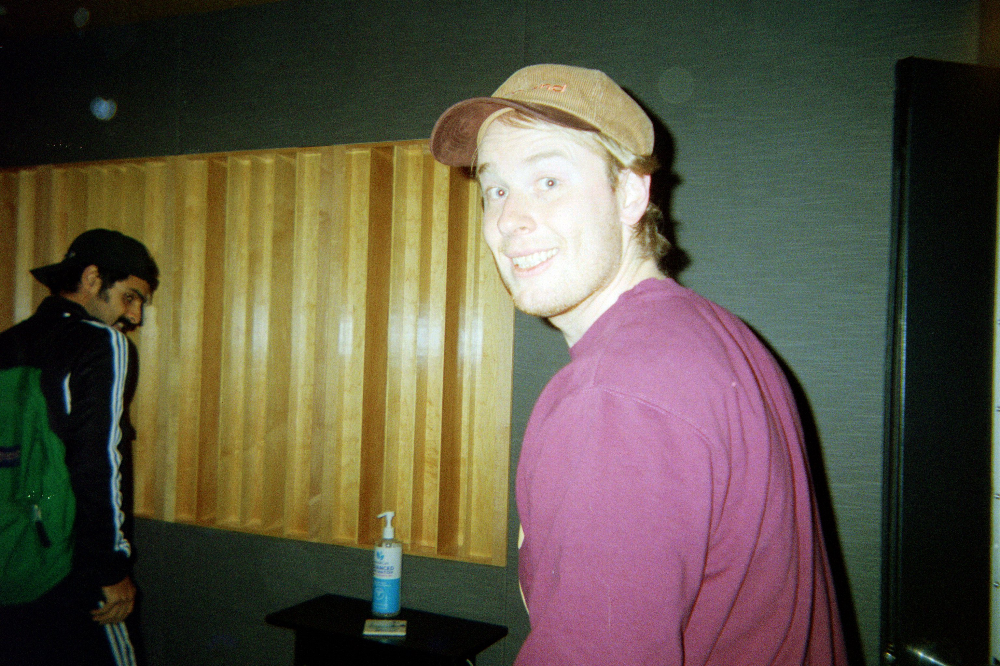

Press Kit
Bio
Bio
| Forever King Clark is a three piece indie rock band based out of Asbury Park, New Jersey. Influenced by artists such as Mac DeMarco, Her's, and Real Estate their sound can be described as "warbly coastal indie". Over the past few years the band has made appearances at the National Cherry Blossom Festival, What A Wonderful Year Festival, and Shore Point's Record's Local Summer Celebration. They have also made appearances on WTSR, WMCX, and Asbury Park TV. The current lineup includes Bobby Kallok on vocals and guitar, John-Michael Monroy on drums, and Amy Evans on bass. |
|---|
Videos
Sitting Out On The Patio Music Video |
|
|---|---|
Tired and Wired at WTSR Underground |
Music
 |
Five Dollar |
|---|
Press

Past Shows
| Asbury Park Brewery - Asbury Park First Live - Brooklyn Tidal Basin Stage - Washington D.C. Wild Air Beerworks - Asbury Park 3BR - Keyport WTSR at TCNJ - Ewing Pino's - Highland Park Georgie's - Asbury Park Belmar Arts Center - Belmar Departed Soles - Jersey City Gaslight - Atlantic Highlands First Live - Brooklyn Monmouth University- West Long Branch Riverview Farmers Market - Jersey City Asbury Lanes - Asbury Park Cafe Improv - Princeton The Asbury - Asbury Park Carton Brewing - Atlantic Highlands Flemington DIY - Flemington Chubby Pickle - Highlands Toms River Brewing - Toms River WMCX at Monmouth University - West Long Branch Asbury Book Co-op - Asbury Park Cafe Artiste - Ocean Grove Lofidelic Records - Belmar The Inkwell - Long Branch Art of the Bean and Leaf - Asbury Park |
|---|
Artists We've Played With

|
Oceans in the Sky The Rodeo Poets Regency Club Meteor Police Polaroid Fade Levi Okun International Superstar Robin Blaise Jack Flowers and The Petal Tones Separatr The Modbeats Emma Engel Ev-o Above The Moon Sophie Swanson Midcentury Kiersten Blue Shire Folk Bran'Spank'an'Noop Shrinkin Minkin Songbird MINNQ Amanda Adams Laura Mock Pretty Vacant Leah Thompson The Circus Spring Ahead, Fall Apart JM Cooks |
|---|
Festivals and Events
| National Cherry Blossom Festival in Washington D.C. Shore Points Records Local Summer Release WTSR Undergound Telegraph Hill Records' What A Wonderful Year Fest Deep End Duds Summer Release Freehold Porchfest Red Bank Porchfest WMCX The X Fest Princeton Porchfest Carton Halloween Party Belmar Porchfest Belmar Arts Center Halloween Party |

|
|---|
Photos
|  | Bobby at Lakehouse StudioDownload |
|---|---|
|
|
Five Dollar Yacht Club EP CoverDownload |

|
Live at the Asbury Book Co-opDownload |
Contact
For booking, general inquiries, or anything else feel free to contact us
Email:kingclarkmusic.nj@gmail.com
Instagram DM:@foreverkingclark
Phone:732-804-6668